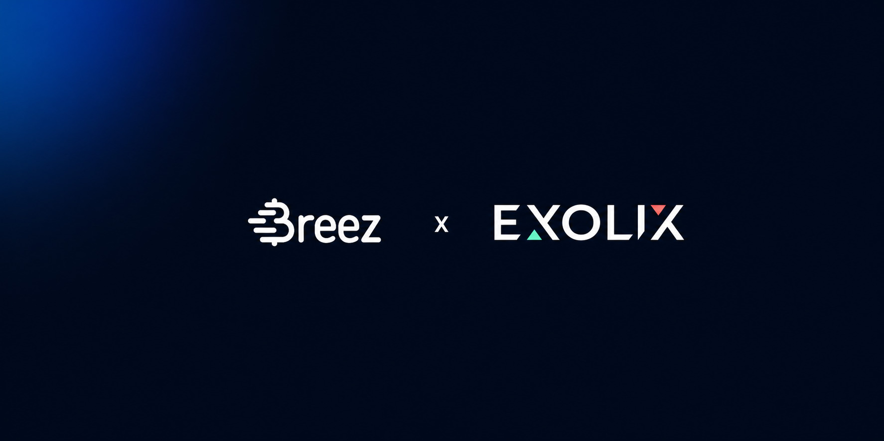

Exolix: Instant Bitcoin Swaps Built in a Day


Exolix is a leading multichain swap aggregator founded in 2018. Users arrive, pick a pair, send funds, and receive their chosen asset in a single transaction. No account is required, and users can choose from hundreds of assets across major networks.
Bitcoin is central to the platform, but for the past eight years on-chain transfers have been the weak link when it comes to speed. On-chain confirmation is too slow for many users and uneconomical for smaller transactions. Until recently, existing alternatives would have forced the Exolix team to compromise either on UX or custody, which was unacceptable.
Exolix had already explored ways to speed up bitcoin. Like many innovators before them, they turned to Lightning and built it themselves: their own node, their own channels, their own liquidity. Technically it worked. Operationally it did not.
Running Lightning in-house meant the usual headaches of opening and closing channels and managing liquidity, which consumed engineering resources Exolix wanted to invest elsewhere.
The experience was not just expensive to run, it wasn't good enough for users. Smaller transfers, the kind in demand among users, were uneconomical to process. The use cases Exolix most wanted to support, including small-scale retail payments and routine bitcoin transfers, exceeded the capabilities of the existing infrastructure.
The Breez SDK solved the central challenge Exolix had been facing: how to give users instant, low-cost, non-custodial bitcoin swaps without taking on the operational complexity of Lightning itself. With the Breez SDK in place, bitcoin on Exolix now moves as fast as any other asset on the platform.
Exolix integrated the Breez SDK as the engine powering bitcoin transactions across the aggregator on the server-side, sitting between the swap engine and the user, invisible to everyone except the engineering team that implemented it. The change is exactly what Exolix and their users were looking for. Every swap that touches bitcoin now clears in seconds, not blocks. Value just flows.
For users:
- Speed: instant bitcoin swaps, 10-minute block confirmations. A trade that used to sit waiting for an on-chain confirmation now completes before the user has had time to check.
- Cost: small swaps that were uneconomical on-chain are now viable, with fees so low they barely register.
- Reach: any asset on the platform can be swapped in or out of bitcoin instantly, moving at the speed of users.
"Breez offers a product which is easy, fast, and very practical. It minimizes development cost and time, and frees up resources for what matters."
For developers:
Exolix describes the Breez SDK as "one of the simplest and most efficient integrations the team has ever run," with a single backend engineer taking it from setup to production in about a day. The documentation was clear, everything worked out of the box, and the whole integration shipped without fuss.
The SDK absorbs the complexities of Lightning that had made Exolix's previous in-house attempts unworkable: no channels to manage, no liquidity to rebalance. Instead of babysitting infrastructure, the team can focus on building improvements users can actually feel.
For growth:
The Breez SDK unlocked a category of swaps Exolix could not previously support. Small, routine trades, where on-chain fees used to ruin the economics, now clear in seconds at a fraction of the cost. Every pair on the aggregator that touches bitcoin is now an instant one, closing the speed gap that used to sit between bitcoin and the rest of the market.
It also improves the swaps Exolix was already running. Existing bitcoin pairs move faster and cost less, so the upgrade is cascading an improved UX across the entire product, not only on the new routes it has enabled.
That expansion did not require a step-change in headcount or infrastructure. The Breez SDK carries the operational weight, so Exolix can focus on running the aggregator. This partnership exemplifies how Breez energizes partners by doing what we do best so that they can focus on what they do best.
Ready to Get Started?
Join Exolix and 75+ apps adding instant, non-custodial bitcoin with the Breez SDK.